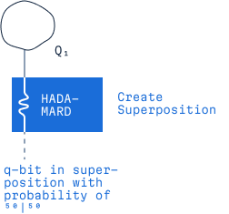

Long Press, Drag and Drop

Measurement & Collapsed State
Measurement in quantum computing is a means of collapsing the quantum state into classical state.
Long Press, Drag and Drop
Measurement in quantum computing is a means of collapsing the quantum state into classical state.